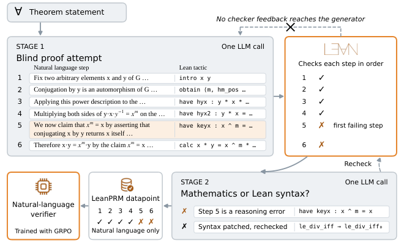

Uses Lean 4 to check paired formal tactic steps, turning compile outcomes into step-level correctness labels for training natural-language proof verifiers.
Abstract
AI systems now write long and difficult mathematical proofs, and checking their step-by-step validity is becoming a bottleneck. A learned verifier could check proofs cheaply, but training one requires a correctness label on every step, and such labels are hard to obtain for open-ended proofs. Existing methods take them from human annotators, which is costly, or derive them from final answers, which proofs do not have, and formalizing each proof in Lean requires expert effort. We introduce LeanPRM, a framework that uses the Lean proof assistant to create step-level labels for natural-language proofs. A model writes a natural-language proof together with a paired formal proof, without feedback from Lean. Lean then labels every step, and a second model discards failures caused only by the formal syntax, so that the negative labels mark errors in the mathematics. LeanPRM contains 10,634 proofs with 152K labeled steps and no human annotation. A Qwen3-4B verifier trained on LeanPRM raises exact step-label accuracy on a held-out set of 200 proofs (LeanPRM-Bench) from 48.2 to 74.7, as opposed to 60.3 when the same base model is trained on PRM800K. It also selects better proofs in best-of-N selection on IMO-level problems, and outperforms the PRM800K-trained verifier on three of four external verification benchmarks. Training on LeanPRM improves verifiers at every size from 0.6B to 8B parameters on LeanPRM-Bench, Hard2Verify and IMO-GradingBench. Given the labels need no human annotation, LeanPRM can grow with the supply of formal statements, offering a path to step-level feedback on AI-generated proofs that are hard for humans to check.
Problem
Training step-level verifiers (process reward models) for natural-language mathematical proofs requires per-step correctness labels. These are costly to get from humans and cannot be derived from final answers, since proofs have none.
Approach
A model writes a natural-language proof in one shot, pairing each step with a Lean tactic, and Lean checks the steps in order. A second model decides whether the first failure is a mathematical error or only a formal-syntax issue. Syntax failures are repaired once and rechecked. For successful proofs, it confirms that the prose matches the formal proof. Steps are labeled by their tactic outcome up to the first failure. Qwen3 verifiers (0.6B–8B) are trained with GRPO on the resulting corpus and read only natural language.

Figure 1: Overview of LeanPRM, with one example from the corpus running through it. Top row: Stage 1 writes a proof attempt from the theorem statement alone, each natural-language step paired with its formal step, and Lean checks the steps in order. Bottom row: Stage 2 decides whether the first failure lies in the mathematics or only in the formal syntax (syntax failures are patched and rechecked
Results
The corpus has 10,634 proofs with 152K labeled steps and no human annotation. On LeanPRM-Bench, exact step-label accuracy for Qwen3-4B rises from 48.2 to 74.7, versus 60.3 when trained on PRM800K. The LeanPRM verifier beats the PRM800K-trained verifier on three of four external benchmarks and improves best-of-N selection on IMO-level problems.